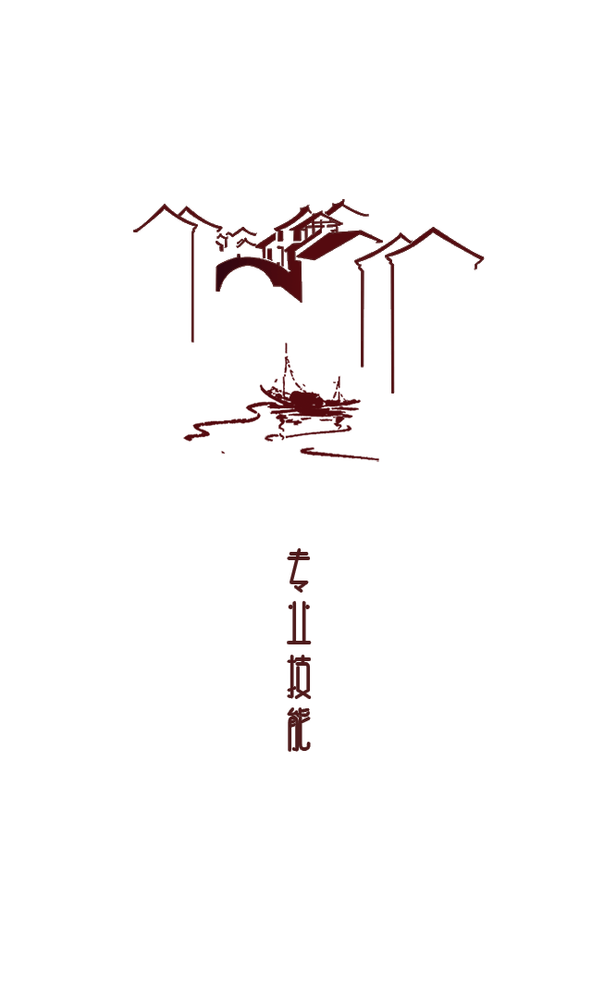
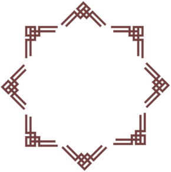

我叫马超，男，28岁，毕业于辽工大电子与信息专业，一年自动化测试 + 3年的前端开发工作经验，熟练掌握原生JS、AJAX、JSONP、jQuery、设计模式、Node、H5、angular等 熟悉了解java、C#等后台开发语言
毕业院校介绍:
2008/09-2012/07
辽宁工程技术大学
学历:本科
专业:电子与信息
简述:在校期间积极参加各种学生组织，曾任学生会办公室主任，心委会副主席
自我学习介绍:
2013/5-2013/12
达内科技
.NET
简述:利用工作之余时间拓展知识储备，熟悉了解C#,java,SQL Server,MVC框架等

原生JS
Node
React
webpack
jQuery
H5
Angular
Ajax
2012/07-2014/3
公司: 北京瑞友科技有限公司
职位: 自动化测试工程师
2014/3-2016.10
公司: 北京瑞友科技有限公司
职位: 前端开发工程师
全栈工程师
 您好,伯乐!
您好,伯乐!QQ:821603741
微信:AlvinMa
Phone:17710193375